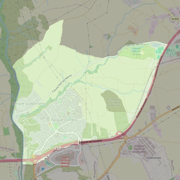

San Simón de Rojas
- Arciprestazgo
- Móstoles
- Población
- Móstoles
- Dirección postal
- c/ Arces, 27 (Parque Coimbra)
- Código postal
- 28935
- Extensión
- 11,27 km² (1.127 ha)
- Teléfono
- 916 466 061
- Correo electrónico
- info@simonderojas.org
- Información demográfica
- De la parroquia · De la población (Móstoles) · Del arciprestazgo (Móstoles)


Descargar mapaLímites según decreto
" Sur: Desde este punto iniciamos los límites parroquiales desde el río Guadarrama siguiendo el límite del término con arroyomolinos hasta la confluencia de la carretera nacional V (antigua nacional km. 22) con la autovía V (Madrid-Extremadura). Este: Desde el punto anterior de la autovía V, hasta el actual campo de futbol municipal (C/ Avda. de los Deportes) siguiendo la autovía V. Norte: Desde el campo de futbol municipal, siguiendo el Camino de Guadarrama, que se identifica con el antiguo ferrocarril (Madrid-Almorox) hasta la confluencia con el Camino de Peñaca, continuamos el Camino de Peñaca hasta encontrarnos con un camino sin nombre que confluye con el Camino de Pinares Llanos, siguiendo este camino llegamos hasta el término de Villaviciosa que continuamos, en este punto Norte, hasta el río Guadarrama. Oeste: Seguimos el límite del término de Villaviciosa bordeando el río Guadarrama hasta llegar al término de Navalcarnero y continuamos hasta terminar en el punto iniciado" (Decreto de erección de 1-3-94)